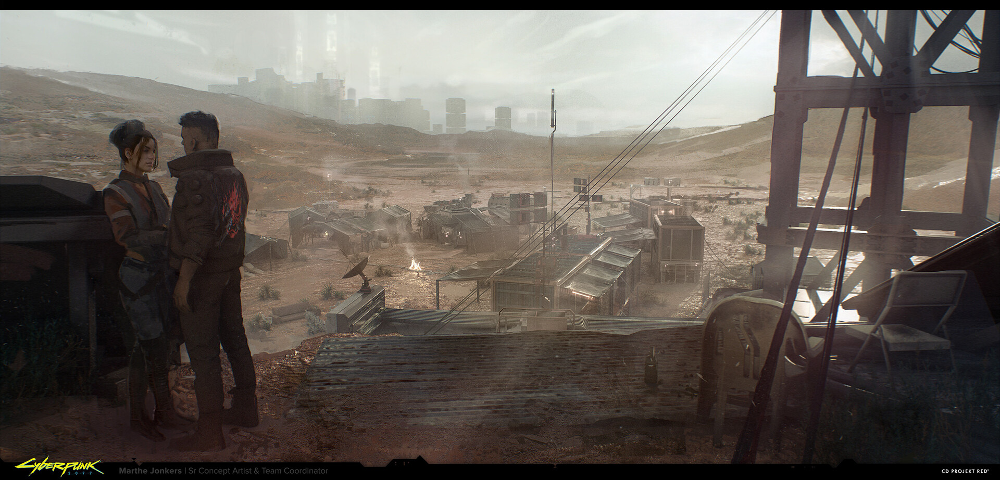

Welcome to Night city
Set in the dystopian Night City in 2077, Cyberpunk 2077 paints a grim future where powerful megacorporations like Arasaka and Militech dominate society, controlling politics, technology, and violence,while ordinary people struggle to survive in neon-lit streets rife with gangs and cybernetic enhancements. Technology has blurred the line between human and machine, with cyberware replacing body parts to enhance strength, vision, or hacking abilities. Players take on the role of V, a mercenary entangled with a mysterious implant housing the digital consciousness of the legendary rocker Johnny Silverhand, navigating themes of identity, transhumanism, and freedom in a world where personal autonomy is constantly threatened by corporate control and the brutal realities of a fractured society.Pick your path
Nomad route
The Nomad life path starts far from the chaotic heart of Night City, in the vast Badlands outside the city limits. As a Nomad, V is part of a tight-knit clan that values freedom and survival in the harsh desert environment. This route offers a unique outsider’s perspective on Night City, where V initially struggles with the city’s dense web of corruption and violence. Early on, Nomad V has special dialogue options that reflect their distrust of the city and its corporate overlords. The Nomad route also grants access to exclusive missions and contacts in the Badlands, and the player can often use the clan’s network for help or resources. This background brings a rugged, independent vibe to V’s story, emphasizing themes of loyalty and belonging.
Corpo route
The Corpo path begins in the ruthless corporate towers of Arasaka, where betrayal and manipulation are as common as morning coffee. Starting here means you’ve already tasted power, ambition, and the toxic politics of the upper class. When you fall from that world, you bring with you a sharp awareness of how corporations operate—knowledge of strategy, backstabbing, and corporate doublespeak. The choices tied to this path often give you leverage when dealing with executives, politicians, and fixers, as you understand their motives better than most. This life path paints your character as someone who has been burned by the system but still knows how to weaponize its rules to survive.

Streetkid
The Street Kid path immerses you in the raw pulse of Night City’s neighborhoods. You’ve grown up among gangs, hustlers, and fixers, Learning how to survive by making deals, reading people, and building respect in the streets. This background means you start with an edge in dealing with gangs or local crews, often being able to talk your way out of conflicts or into profitable arrangements. Your choices tend to reflect a pragmatic outlook—you know that survival in Night City depends less on ideals and more on who you know and what you’re willing to do. Playing as a Street Kid emphasizes grit, loyalty to the streets, and a recognition that the city itself is both predator and prize.